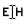

| Using | Features | Links |
The purpose of this step is to find a sastisfactory sequence alignment between the templates and the query, which can be used to build a structure.
For general information on the panel, see the topic Structure Prediction Panel.
There are several ways to produce an alignment for use in the Build Structure step:
For technical details about the alignment program, see the ska—Protein Structure Alignment topic in the Prime Command Reference Manual.
To generate an SSP for the query, click Run. If you want to save an SSP for later use, right-click on an SSP for a menu of options, including deleting the SSP, hiding all SSPs, or opening the Export SSP panel. If there is a difficulty with exporting a file, an error message is displayed. To import an SSP, click the Import button for Secondary structure prediction, and use the file selector to locate and import the SSP.
If you believe an SSP is incorrect, you may delete it entirely or edit the incorrect portions. To delete the SSP, right-click on the SSP and choose Delete. To edit the SSP, click the Edit SSP toolbar button,
then highlight the part of the SSP you wish to change, and type the character e, h, or -. The highlighted region of the prediction is changed to your choice: E (strand), H (helix), or - (loop).
To retrieve an unmodified SSP after editing, right-click on it and choose Revert.
You can edit any alignment using combinations of the Prime toolbar buttons Slide Freely, Slide as Block, Set Anchors, Lock Gaps, and Unlock Gaps. A preliminary model of the query is displayed in the Workspace, colored by Residue Property, revealing the location of charged, polar, and hydrophobic residues.
This error dialog box lists possible alignment problems that you may want to fix before continuing to the next step. For example, gaps in secondary structure elements of the template, or gaps in the query that are aligned to secondary structure elements of the template. Click Continue to go on to the next step anyway; click Cancel to remain in Edit Alignment.
Choose the alignment program to be used for alignment.
ClustalW—Align the query and template using ClustalW, based only on the sequence information. This is usually very fast, and is best used when there is high sequence identity between the query and the template.
Prime STA—Align the query and template using the Prime STA program, which uses secondary structure assignments as well as sequence information. This choice requires secondary structure predictions (SSPs).
Run an alignment that includes special features for aligning GPCRs, which include fingerprint matching, a customized GPCR sequence database, and identification of transmembrane helices.
Run all available secondary structure prediction programs. SSpro is bundled with Prime, but PSIPRED, which is an optional third-party program, is highly recommended for optimal results, especially for GPCRs. PSIPRED is not available on Windows. See Prime Third-Party Programs for more information on this program.
Import a secondary structure prediction for the query. Opens a file selector in which you can select the SSP file. The SSP must be in FASTA, Maestro, or PSPIRED format. If the file contains bad data or the sequence doesn't match the query sequence, an error message is displayed.
Run a full alignment of the query to the template, using the chosen alignment method.
The family name for the query is displayed in this text box after you search for families.
Run HMMER on the Pfam database to search for globally conserved residues from a multiple sequence alignment of homologous proteins, and identify the protein family. The conserved residues are shown in the sequence viewer, colored according to the template color if both the template and the query have the conserved residue. This allows you to easily identify conserved residues that are not in the template or in the query.
Lists the templates with their alignment score, number of identities, positives, and gaps.
Import an alignment from a file, or export an alignment to a file. These buttons open a file selector, in which you can navigate to the desired location and select or name the file.
Note: The template PDB ID must be uppercase in the alignment file. If it is not, you must edit the alignment file before importing it.